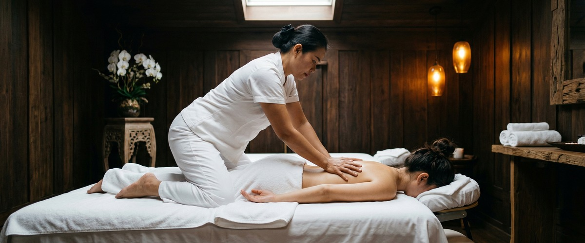
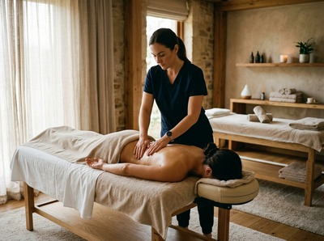
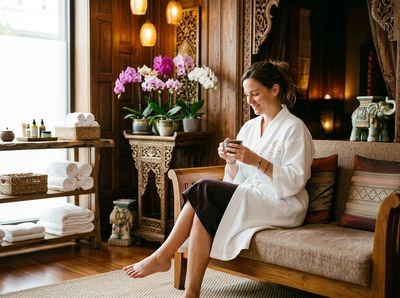

If you and a partner, close friend, or family member are looking to unwind together, a couples Thai oil massage in Glasgow gives you that rare shared hour where both of you can genuinely switch off.

Two therapists work side by side, so the experience is synchronised and unhurried from start to finish.
Thai oil massage blends the rhythmic pressure and energy-line work of traditional Thai massage with smooth, flowing strokes made possible by therapeutic oils. Traditional Thai massage is done fully clothed and focuses on assisted stretching. Thai oil massage uses high-quality oils so the therapist's hands glide across the body with fluid, continuous movement.
The result is deeply relaxing while still addressing real muscle tension beneath the surface.

In a couples setting, both treatments run at the same time in the same room. You share the experience as it happens. That makes it a meaningful way to spend time together, rather than simply booking two separate appointments.
This treatment works well for couples marking an anniversary or birthday, or friends who want to treat themselves. It also suits anyone who finds it easier to commit to self-care when they are doing it with someone else.
It is a good fit for people who prefer a gentler, flowing style over intense pressure work. If you are new to massage, it is a comfortable and welcoming place to start.
You will be welcomed into a treatment room set up for two, with both therapists present throughout. Sessions run for 60 or 90 minutes. You will undress to your comfort level and lie under a towel for the duration.
The therapists work with warm oils using long gliding strokes, targeted kneading, and gentle pressure along the body's natural lines. You can book your couples session online and note any areas of tension or preferences when you do.

Afterwards, most people feel deeply relaxed and slightly drowsy. Give yourself a little time before heading back into a busy day. Drink water when you leave and let the effects settle in the hours that follow.
At Serendipity Massage Therapy & Wellness on Hope Street in Glasgow city centre, every therapist is trained to the same standard. The techniques were developed by head therapist Jariya Malone. You are not booked with whoever is free.
You are treated by a professional team that brings the same care and skill to every session, whether it is your first visit or your twentieth. Reserve your couples treatment and arrive knowing you are in capable hands.
You will undress to your comfort level and be covered by towels throughout the treatment. Only the area being worked on is uncovered at any time. Your therapist will explain this before the session begins, so there is nothing to feel uncertain about.
Sessions are available in 60 or 90-minute durations. For a first visit, 60 minutes gives a thorough full-body treatment. If you want more time on specific areas, or simply want to extend the experience, 90 minutes is a worthwhile choice.
Most people leave feeling deeply relaxed, with looser muscles and a calmer mind. Some clients feel slightly drowsy for an hour or so afterwards. This is a normal response. We recommend drinking water after your session and avoiding a heavy schedule straight afterwards.
Traditional Thai massage is done fully clothed on a mat. It uses assisted stretching and pressure along the body's energy lines. Thai oil massage applies oils directly to the skin, allowing smooth, flowing strokes alongside targeted pressure work. The oil version is generally gentler and better suited to those who prefer a relaxing rather than intensive treatment.
It is one of the best choices for people who have not had a professional massage before. The flowing, oil-based technique is comfortable and easy to receive. The shared setting with a partner or friend also tends to put first-timers at ease. Your therapist will check in with you throughout to make sure the pressure and pace feel right.
Many clients enjoy a couples treatment once a month. It is a good way to maintain wellbeing and make time for each other. If either of you carries regular tension from desk work, travel, or physical activity, more frequent individual sessions can work well alongside the occasional couples visit. The team at Serendipity can advise on what suits your needs.